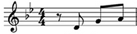

Notas musicais são os elementos mínimos de um som. Quando uma corda vibra, ela movimenta as moléculas de ar ao seu redor. Essa agitação das moléculas ocorre na mesma frequência de vibração da corda. O ouvido humano capta essa vibração do ar e a processa atribuindo um som ao cérebro. Para cada frequência de vibração, o cérebro atribui um som diferente (uma nota diferente).
As notas musicais podem ser identificadas por letras para facilitar a escrita e aumentar a velocidade de leitura. A notação utilizada é universal, o que facilita a comunicação com músicos de outros países. Existem 7 letras para representar as notas musicais. A definição das letras e suas notas correspondentes é a seguinte:
| Cifra | Nota |
|---|---|
| C | Dó |
| D | Ré |
| E | Mi |
| F | Fá |
| G | Sol |
| A | Lá |
| B | Si (H no alemão) |
Existe também outra representação para as notas musicais, que não depende de letras. É a famosa partitura. Você já deve ter visto por aí algo parecido com isto:
Pois bem, isso é uma representação por partitura. Como ela é bem mais detalhada e completa (envolve ritmos e tudo o mais), criamos um tópico específico para explicar e ensinar tudo o que você precisa saber sobre partitura.
Caso esse seja seu primeiro contato com representações musicais, não se preocupe tanto com a partitura, procure antes decorar a representação por letras, que é bem mais simples.